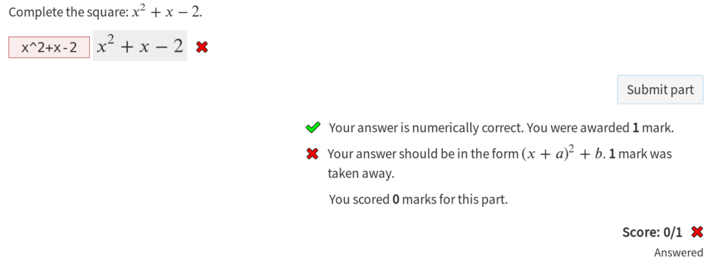
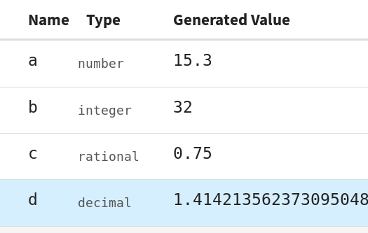
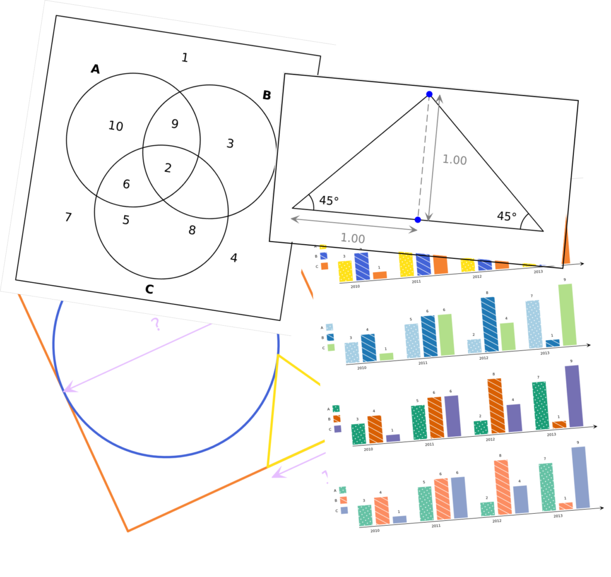
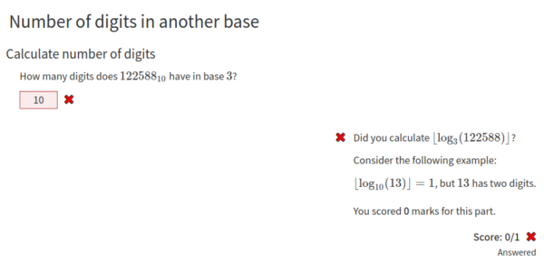
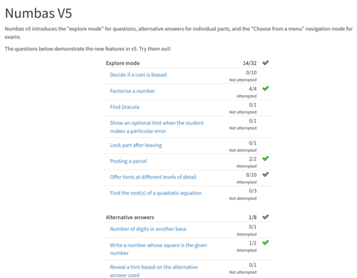
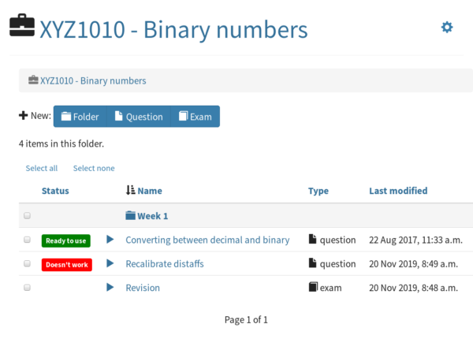

Christian Lawson-Perfect, Newcastle University
English, German, Chinese, Vietnamese, Spanish, French, Portuguese, Swedish, Dutch, Norwegian Bokmål, Italian, Albanian, Japanese, Arabic, Hebrew, Polish, Turkish.
Christian Lawson-Perfect, Chris Graham, Mohit Jayanti Gurumukhani, RingoKid, Johan Forslund, Joshua Capel, Adarsh Shetty, David Hadas, Grant Gollier, Danil Sergeev, tpilewicz






Now lives at
aria-live for changing textAs ever, more things than I have time to do.
Runtime: 75 open issues, 43 "wishlist", 3 "good first issue".
Editor: 36 open issues, 13 "wishlist", 1 "good first issue".
Help is very welcome!